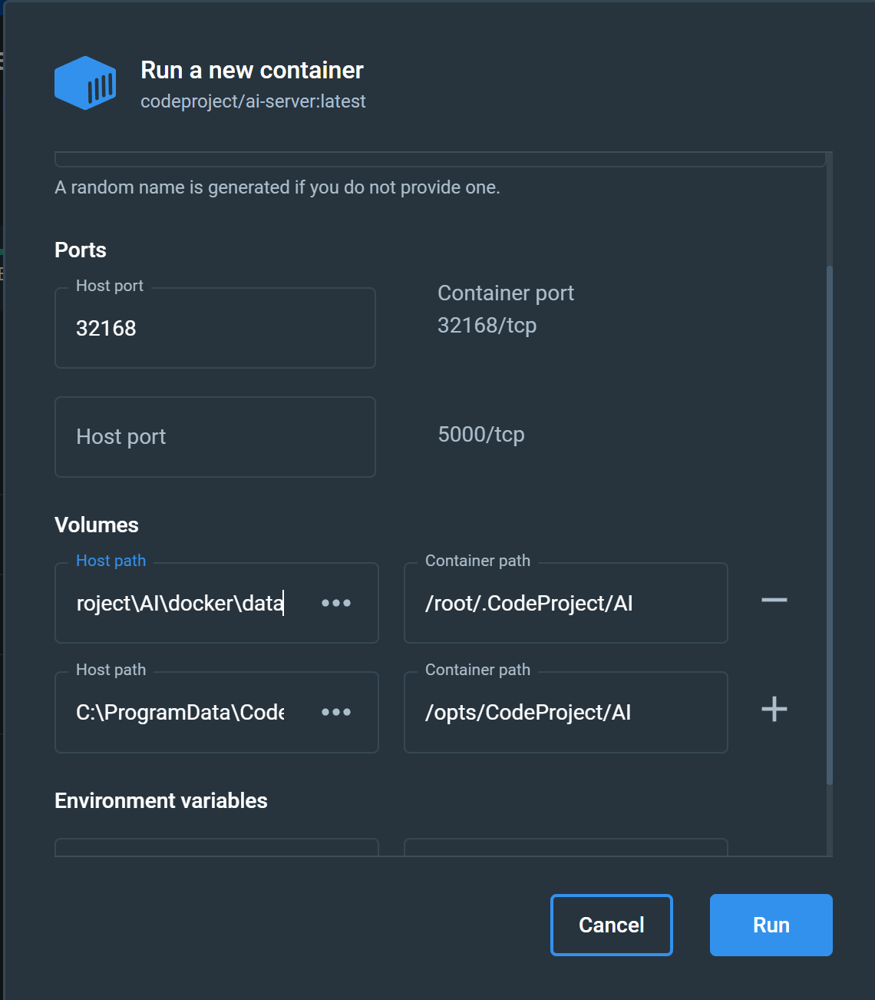

Running CodeProject.AI Server in Docker
Docker is a technology that allows you to package up applications, libraries, drivers, runtimes, files, and anything else your application may need, all in a single deployable image that can run wherever Docker can run. Which is almost everywhere. The beauty is you don't have to worry about installing drivers or packages or having version conflicts: everything you need to run is in the container, ready to go.
To run CodeProject.AI Server in Docker you will need to download and install Docker Desktop. This will install the runtime and desktop manager.
CodeProject.AI Server images
- codeproject/ai-server The basic CPU-only server for x64 systems
- codeproject/ai-server:cuda11_7 A GPU (NVIDIA CUDA 11.7) enabled version x64 systems. This image will also run on non-GPU systems.
- codeproject/ai-server:cuda12_2 A GPU (NVIDIA CUDA 12.2) enabled version x64 systems. This image will also run on non-GPU systems.
- codeproject/ai-server:arm64 An image built for Arm64 chipsets such as the Raspberry Pi or Apple Silicon devices.
- codeproject/ai-server:rpi64 A version specifically for Raspberry Pi Arm64 devices. This contains an object detection module suited for low resource systems.
Running a Docker container
There are two main ways to launch a Docker container: command line or using Docker Desktop.
When running a Docker image in a container you have two further choices
- Save settings and downloadable modules directly in the Docker container. Each time you restart the container these settings will remain. If you update your Docker image and container you will lose your changes.
- Save settings and downloadable modules in a folder outside the Docker container. This allows you to update your Docker image and container and keep all the modules and settings you've saved.
Simple Docker launch (settings saved in the container)
For this case we simply need to map the ports used and choose the correct image.
If you are running Windows on Arm then use codeproject/ai-server:arm64 instead
of codeproject/ai-server
If you are running Linux on Arm then use codeproject/ai-server:arm64 instead
of codeproject/ai-server
Advanced Docker launch (settings saved outside of the container)
We will need to map two folders from the Docker image to the host file system in order to allow settings to be persisted outside the container, and to allow modules to be downloaded and installed. This ensures that when you upgrade your docker images, the settings and modules you've already downloaded remain.
The two folders are:
- The settings folder (/etc/codeproject/ai in the Docker image)
- The module downloads folder (/app/modules in the Docker image)
Note that we use different folders in each Operating System based on best practices.
/etc and /opt folders for Linux, ProgramData for Windows, and Library\Application Support for macOS.
docker run --name CodeProject.AI -d -p 32168:32168 ^
--mount type=bind,source=C:\ProgramData\CodeProject\AI\docker\data,target=/etc/codeproject/ai ^
--mount type=bind,source=C:\ProgramData\CodeProject\AI\docker\modules,target=/app/modules ^
codeproject/ai-server
If you are running Windows on Arm then use codeproject/ai-server:arm64 instead
of codeproject/ai-server
docker run --name CodeProject.AI -d -p 32168:32168 \
--mount type=bind,source=/etc/codeproject/ai,target=/etc/codeproject/ai \
--mount type=bind,source=/opt/codeproject/ai,target=/app/modules \
codeproject/ai-server
If you are running Linux on Arm then use codeproject/ai-server:arm64 instead
of codeproject/ai-server
docker run --name CodeProject.AI -d -p 32168:32168 \
--mount type=bind,source=/etc/codeproject/ai,target=/etc/codeproject/ai \
--mount type=bind,source=/opt/codeproject/ai,target=/app/modules \
--privileged -v /dev/bus/usb:/dev/bus/usb
codeproject/ai-server:rpi64
For those who have a USB device such as a Coral.AI Edge TPU, including the --privileged -v /dev/bus/usb:/dev/bus/usb flags will provide access to the Coral hardware.
docker run --name CodeProject.AI -d -p 32168:32168 \
--mount type=bind,source='/Library/Application Support/CodeProject/AI/docker/data',target=/etc/codeproject/ai \
--mount type=bind,source='/Library/Application Support/CodeProject/AI/docker/modules',target=/app/modules \
codeproject/ai-server
File Sharing in macOS
By default, macOS only allows mounting to /tmp, /Users/Volumes/private and /var/folders. In order to bind mount to the /Library/Application Support folder you will need to go into Docker settings and add this folder

docker run --name CodeProject.AI -d -p 32168:32168 \
--mount type=bind,source='/Library/Application Support/CodeProject/AI/docker/data',target=/etc/codeproject/ai \
--mount type=bind,source='/Library/Application Support/CodeProject/AI/docker/modules',target=/app/modules \
codeproject/ai-server:arm64
File Sharing in macOS
By default, macOS only allows mounting to /tmp, /Users/Volumes/private and /var/folders. In order to bind mount to the /Library/Application Support folder you will need to go into Docker settings and add this folder
To use the GPU enabled images
The Docker GPU version is specific to NVidia's CUDA enabled cards with compute capability >= 6.0.
In order to ensure the Docker image has access to the GPU hardware, you need to use the
--gpus all flag, and pull down the codeproject/ai-server:cuda11_7 image.
Note there is no Arm64 GPU-enabled build at this time.
The Docker GPU version will only run under Windows and Ubuntu. macOS no longer supports NVidia hardware.
Starting using Docker Desktop
To launch an image using Docker Desktop you will first need to pull an image from
Docker hub. In a command terminal run docker pull codeproject/ai-server to get
the latest version of the CodeProject.AI Docker image, or use one of the images names listed above. You can launch a container
using the image via Docker Desktop.
In the Images tab, select the image you wish to run, click the 'Run' button, and then click Optional Settings

Set the following properties:
- Ports: 32168 (or 5000 if you've been using legacy versions that expect port 5000)
- Volumes (if you wish to persist settings outside the container):
- Host Volume C:\ProgramData\CodeProject\AI\docker\data maps to Container path /etc/codeproject/ai
- Host Volume C:\ProgramData\CodeProject\AI\docker\modules maps to Container path /app/modules
- Ports: 32168 (or 5000 if you've been using legacy versions that expect port 5000)
- Volumes (if you wish to persist settings outside the container):
- Host Volume /etc/codeproject/ai maps to Container path /etc/codeproject/ai
- Host Volume /opt/codeproject/ai maps to Container path /app/modules
- Ports: 32168 (or 5500 if you've been using legacy versions that expect port 5500)
- Volumes (if you wish to persist settings outside the container):
- Host Volume /Library/Application Support/CodeProject/AI/docker/data maps to Container path /etc/codeproject/ai
- Host Volume /Library/Application Support/CodeProject/AI/docker/modules maps to Container path /app/modules
You can also provide an optional name. Just be sure not to include spaces. Docker Desktop is fussy.
Click 'Run' and you're done.
Docker Compose
Here are some basic docker compose files to get you started.
version: "3.9"
services:
CodeProjectAI:
image: codeproject/ai-server:cuda11_7
container_name: codeproject-ai-server-cuda
hostname: codeproject-ai-server
restart: unless-stopped
ports:
- "32168:32168"
environment:
- TZ=America/Toronto
deploy:
resources:
reservations:
devices:
- driver: nvidia
count: 1
capabilities: [gpu]
Here's an example of how to use a docker compose file on Windows. Open up Notepad. Copy and paste the above command line into Notepad. Then save the file as a .yml, not .txt, and remember where you saved it.
Open a command line. Navigate to the folder where you saved the .yml file, then type :
``` batch title='Command line'
docker compose docker-compose.yml up
```
where docker-compose.yml is the name of your .yml file.
If you want to use a docker compose file that will allow you to add custom models, make the following additions to your docker compose file:
```yaml
version: "3.9"
services:
CodeProjectAI:
image: codeproject/ai-server
container_name: codeproject-ai-server-cpu
hostname: codeproject-ai-server
restart: unless-stopped
ports:
- "32168:32168"
environment:
- TZ=America/Toronto
volumes:
- codeproject_ai_data:/etc/codeproject/ai
- codeproject_ai_modules:/app/modules
volumes:
codeproject_ai_data:
codeproject_ai_modules:
```
Then open a command line and type:
``` batch title='Command line'
docker compose docker-compose.yml up
```
Open Docker Desktop and select the Containers tab and click on the container name
This will open up the container. There are a number of tabs that let you get information about the container. Click on the Files tab. This is where you would add/delete file from Volumes as they are mapped to directories in the container file system.

You can navigate to the custom-models directory, then drag and drop your custom model onto the folder name.
Changing Server settings
To change the settings of an instance of CodeProject.AI Server running in a Docker container, you have two main options
-
Pass command line variables to the docker command. Read more here
-
Use the CodeProject.AI Server settings API. You can read more here
Common example: specifying a folder for custom object detection files for the ObjectDetectionYolo module
The Object Detection (YOLO) module provides the ability to specify a folder that will contain custom models. To access this functionality in Docker you simply map the folder inside the docker instance to a folder on your host operating system.
This module comes pre-installed in most docker images (the exception being the Raspberry Pi and Jetson docker images). Pre-installed modules live in /app/preinstalled-modules, rather than /app/modules. This allows you to download, install and persist modules by mapping to the /modules folder while still having pre-installed modules available.
Suppose we have our custom models in the C:\my-custom-models folder. To map this to the
custom-models folder in the docker instance you would launch the image like:
docker run --name CodeProject.AI -d -p 32168:32168 ^
--mount type=bind,source=C:\ProgramData\CodeProject\AI\docker\data,target=/etc/codeproject/ai ^
--mount type=bind,source=C:\ProgramData\CodeProject\AI\docker\modules,target=/app/modules ^
--mount type=bind,source=C:\my-custom-models,target=/app/preinstalled-modules/ObjectDetectionYolo/custom-models,readonly ^
codeproject/ai-server
Accessing the CodeProject.AI Server Dashboard.
Open a browser and navigate to http://localhost:32168 to open the CodeProject.AI Dashboard. This will provide you with details of the server operation.
Explore the modules running in the server
We provide a sample application written in HTML and JavaScript that performs various AI operations. Open http://localhost:32168/explorer.html in a browser. There is also a link to this at the top of the Dashboard.
Adding new modules to a Docker container
As of version 1.6.8 there is now the ability to add modules to the host server and have them be run inside the Docker container. Version 2.0 of CodeProject.AI Server extends this too allow modules to be downloaded and installed at runtime via the dashboard.
In our discussions on launching a Docker image above, we included a mapping of the /app/modules folder (in the Docker image) to a folder in the host file system (eg C:\ProgramData\CodeProject\AI\docker\modules). Doing this allows CodeProject.AI Server the chance to download, install and store modules that will persist over Docker container restarts.
It also provides the means for you to add a new module to an existing Docker container.
-
Launch your Docker container as per the instructions above. The downloaded modules in the Docker container are stored in /app/modules. In Windows you would have mapped this folder to C:\ProgramData\CodeProject\AI\docker\modules. in Linux you would have mapped it to /opt/codeproject/ai, and in macOS it would be mapped to /Library/Application Support/CodeProject/AI/docker/modules.
-
Copy your new module's folder into the mapped /app/modules folder on your host (eg. C:\ProgramData\CodeProject\AI\docker\modules in Windows).
-
Ensure the module's modulesettings.json settings file has
RuntimeLocationset as "Local"". -
Ensure you have a install.sh script for your module, in the module's folder. Any calls to 'setupPython' or 'installPythonPackages' should specify the install location as "Local".
-
Open a terminal to your Docker Container. Docker Desktop provides a neat GUI for doing this. Go to /app/modules/[your module folder] and execute
This will run the setup script on your new module from within the Docker container, ensuring the module is setup correctly for the container's operating system.
The next time you start the Docker container this module will be discovered and started along with the other modules.